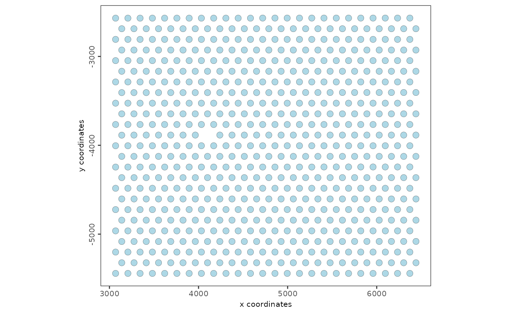

Add a giotto image to a spatial ggplot object post creation
Usage
addGiottoImageToSpatPlot(
spatpl = NULL,
gimage = NULL,
layer = c("bg", "overlay"),
alpha = NULL
)Arguments
- spatpl
a spatial ggplot object
- gimage
a giotto image, see
createGiottoImage- layer
numeric layer on which to add the giotto image. OR takes 'bg' or 'overlay' as input to designate last (bottom/background) or first (top/overlay)
- alpha
(optional) add giotto image to plot with transparency. Numeric. From 0 (transparent) to 1 (fully visible)
Examples
g <- GiottoData::loadGiottoMini("visium", verbose = FALSE)
#> Warning: Some of Giotto's expected python module(s) were not found:
#> pandas, igraph, leidenalg, community, networkx, sklearn
#> (This is fine if python-based functions are not needed)
#>
#> ** Python path used: "/usr/bin/python3"
my_giottoimage <- GiottoClass::createGiottoImage(g,
mg_object = system.file("image.png", package = "GiottoVisuals"),
name = "image"
)
#> Error in loadNamespace(x) : there is no package called ‘magick’
#> Error in GiottoClass::createGiottoImage(g, mg_object = system.file("image.png", package = "GiottoVisuals"), name = "image"): Error in loadNamespace(x) : there is no package called ‘magick’
#> can not be read by magick::image_read()
my_spatplot <- spatPlot2D(g, return_plot = TRUE)

addGiottoImageToSpatPlot(spatpl = my_spatplot, gimage = my_giottoimage)
#> Error: object 'my_giottoimage' not found